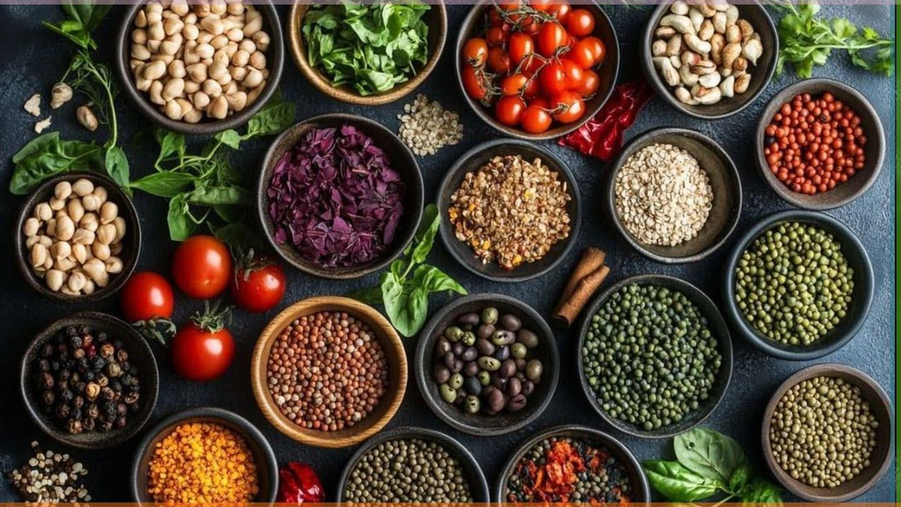

Pilares da alimentação equilibrada
Os pilares de uma alimentação equilibrada são os princípios básicos que garantem uma nutrição adequada para manter a saúde, prevenir doenças e promover bem-estar. Os principais pilares, segundo organizações como o Ministério da Saúde do Brasil, a Organização Mundial da Saúde (OMS) e nutricionistas especialistas, são:

Variedade
Consumir alimentos de todos os grupos alimentares: Frutas e verduras: vitaminas, minerais e fibras. Cereais integrais: arroz integral, aveia, quinoa (energia e fibras). Leguminosas: feijão, lentilha, grão-de-bico (proteína vegetal). Proteínas: carnes magras, ovos, peixes, leite e derivados. Gorduras boas: azeite de oliva, castanhas, abacate.
Para saber mais Qualidaderiorizar alimentos naturais ou minimamente processados: Evitar ultraprocessados (refrigerantes, biscoitos recheados, salgadinhos). Cozinhar com ingredientes naturais sempre que possível. Priorizar alimentos naturais ou minimamente processados: Evitar ultraprocessados (refrigerantes, biscoitos recheados, salgadinhos). Cozinhar com ingredientes naturais sempre que possível.
Para saber mais  Equilíbrio (Moderação)Comer nas quantidades certas, sem excessos. Equilibrar calorias ingeridas com o gasto energético. Controlar o consumo de sal, açúcar e gorduras saturadas.
Para saber mais Harmonia e RegularidadeFazer refeições em horários regulares. Comer com atenção, sem pressa e em ambientes tranquilos.
Para saber mais SustentabilidadeValorizar alimentos da estação e da região. Reduzir o desperdício. Preferir alimentos que causem menos impacto ambiental.
Para saber mais